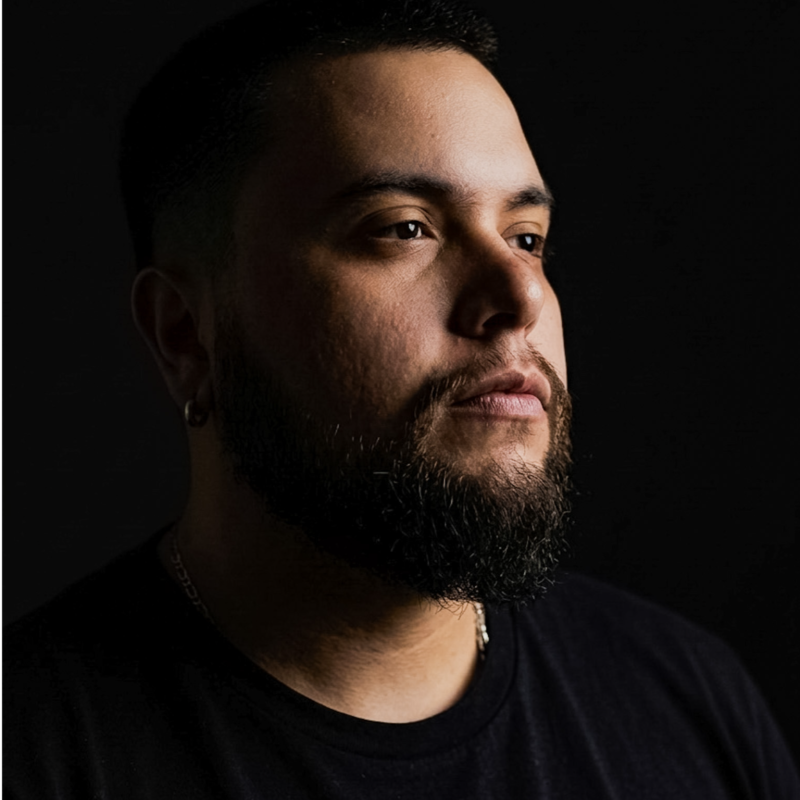

Oficina de Estratégia
Aprender a decidir melhor não é sobre ter mais informação. É sobre exercitar julgamento em cima de um problema real, com gente que pensa diferente, até chegar em algum lugar concreto.
Ao longo de um dia, um grupo pequeno faz exatamente isso. Sem framework para copiar, sem resposta pronta esperando no final. O que sai daqui é algo que dá para mostrar, não para contar.
Separar o que é real do que é pressão de timeline.
Todo mundo já tem uma opinião sobre IA e um deck pronto. Aqui começa diferente: um convidado traz um problema real, com tensões reais e decisões ainda em aberto. O grupo entra nesse problema antes de tentar resolvê-lo.
Abrir caminhos com quem pensa diferente de você.
Ninguém chega com slide pronto. O que entra na prancheta é experimento, e isso é o método. A IA entra para encurtar o caminho entre a ideia e o teste. O grupo decide, mais rápido.
Escolher. Mesmo sem ter certeza.
Com as possibilidades na prancheta, o grupo tensiona as ideias até que uma direção faça sentido. O foco não é consenso fácil. É explicitar o que se ganha, o que se abre mão e por que vale a pena mesmo assim.
Transformar a direção escolhida em algo que dá para mostrar.
Não importa o formato. Se for uma tela, faça a tela. Se for um fluxo, desenhe o fluxo. Se for papel e caneta, use papel e caneta. Quando esse dia terminar, você não vai contar o que fez. Vai mostrar.
Continuar a conversa fora da prancheta.
Encerramos o dia abrindo o espaço para outro tipo de troca. As conversas mais honestas costumam acontecer depois que a pressão vai embora. Essas também fazem parte do que você leva daqui.
Motivos
para participar
Você está no meio do hype e não confia em nada do que está vendo.
Tem muita coisa sendo vendida como solução e pouca coisa sendo tratada com seriedade. Você já percebeu isso, mas ainda está tentando encontrar uma forma de pensar sobre IA que não dependa de acreditar em promessa. Esse encontro existe para isso: investigar o tema com critério, sem glamour e sem resposta pronta esperando no final.
Você aprende fazendo, não ouvindo.
O dia é quase todo prática. Cada edição conta com um convidado que traz um problema real, com contexto, tensões e decisões ainda em aberto. Você entra nesse problema, constrói junto com outras pessoas e chega em algum lugar concreto antes de ir embora. O convidado não sai com uma solução. Você não sai com um cliente. Os dois saem com formas novas de ver o mesmo problema. A teoria existe aqui, mas entra quando o problema pede, não antes.
Você já sabe o que está errado. Só ainda não sabe como provar.
A intuição está lá. O que falta é o repertório para transformar o que você já sente em algo que você consegue articular, defender e ajustar quando alguém questiona. Esse é um dos músculos que o dia existe para exercitar.
Você quer pensar junto com gente que está no mesmo nível de seriedade.
Poucas pessoas, contextos diferentes, mesmo nível de comprometimento. A turma é pequena por escolha porque a qualidade do que acontece numa sala depende muito de quem está nela. É dessa combinação que saem as trocas que valem a pena.
Facilitadores
Aprende com quem faz na prática.


Gus Aragon
Idealizador do Estúdio Kata e Líder de estratégia de produto

Will Diniz
Idealizador do Estúdio Kata e Designer sênior de produto
O conteúdo já está sendo totalmente aplicável aqui. Eu já estou conseguindo aplicar no meu trabalho, às vezes nem direto no projeto, mas ajudando outras pessoas com os métodos que vocês passaram.
Informações adicionais
Certificado digital
Todos os participantes recebem certificado digital de participação ao final do encontro.